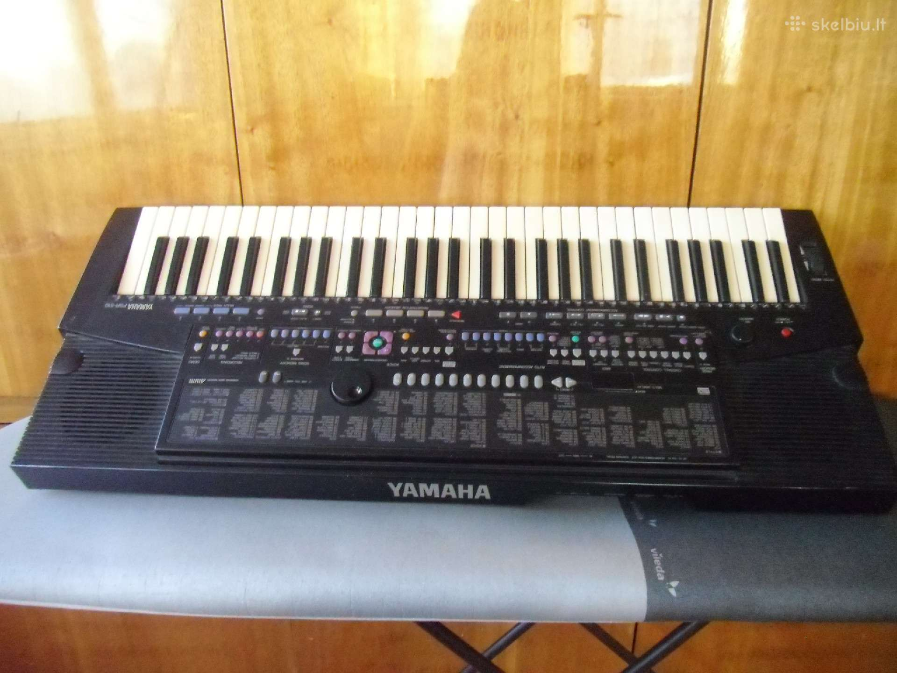

Tamsta - muzikos salonas | Tamsta - Muzikos prekių parduotuvė MUZIKOS INSTRUMENTAI Tai žaisliniai muzikos instrumentai, mikrofonai ir garsiakalbiai.Mes siūlome įvairių gitarų, smuikų, būgnų, akordeonų, sintezatorių ir kelių tipų mikrofonų pasirinkimą. Su šiais vaikiškais muzikos instrumentais jūsų vaikai galės pasijusti tikromis žvaigždėmis ir rengti pasirodymus namuose.
Muzikos instrumentai - milgreta.lt Muzikos instrumentai- el. parduotuvė ir muzikos prekės internete. Gitaros, klavišiniai instrumentai, perkusija, pučiamieji instrumentai ir daugelis kitų instrumentų. Užsukite - pas mus muzikos instrumentai - gera kaina !!!
Muzikos instrumentai : Objektai : Pagal kategoriją ir temą ... Klavišiniai instrumentai. Instrumentai. Pianinai . Fortepijonai . Sintezatoriai . Stacionarūs skaitmeniniai pianinai . Portatyvūs skaitmeniniai pianinai ... Be UAB "MUZIKOS FAKTORIUS" sutikimo draudžiama kopijuoti ir platinti svetainėje esančią informaciją. El. parduotuvių nuoma: verskis.lt.
Muzikos faktorius Muzikos instrumentai Atsarginės dalys Ausinės Garso kolonėlės Garso procesoriai Gitaros Grotuvai-rašikliai Instrumentų efektai Jungtys Kabeliai Kiti instrumentai Klasikiniai styginiai KLasikiniai styginiai instrume Klavišiniai Kompiuterija MIDI Mušamieji Pučiamieji Sempleriai Stovai, spintos, krepšiai Studijiniai monitoriai
Keisčiausi muzikos instrumentai | PrieKavos.lt Muzikos instrumentai ir muzikos prekės Tamsta internetinėje parduotuvėje. Gitaros, būgnai, klavišiniai, pučiamieji, styginiai, pro audio ir kita.
Gitaros | Muzikos instrumentai - muzikosgarsai.lt Muzikos instrumentai ir jų dalys. Pučiamieji muzikos instrumentai skirtomi į medinius ir varinius. Mediniams muzikos instrumentams priskiriami tokie instrumentai kaip išilginė fleita, skersinė fleita, klarnetas, obojus, saksofonas, fagotas ir t.t. Variniams muzikos instrumentams priskiriami trimitai, kornetai, fliugelhornai, trombonai, althornai, tenorhornai, eufonijos, tūbos.
Muzikos prekių parduotuvė - Midiaudio „Royalty free“ Muzikos instrumentai vaizdas: Smiling young man with eyes closed playing guitar while leaning on wall at Santa Cruz, Seville, Spai . dgof00886 [RF] Westend61 „Royalty free“ Muzikos instrumentai vaizdas: Smiling girl playing piano with brother in backyard .
Muzikos instrumentai, priedai internetu | pigu.lt Rubrikoje yra matomos įmonės, kurių veiklos sritis - įvairūs muzikos instrumentai, reikmenys, jų gamyba, pardavimas, importas, eksportas ar remonto darbai.
Muzikos instrumentai - ABC žaislai Lauko muzikos instrumentai. Lauko muzikos instrumentai darželiui, mokyklai. Instrumentai skirti groti auke. 1 - 32 iš 40 -18 % Lauko muzikos instrumentų komplektas Rainbow Trio Ensemble. Kodas: Rainbow ...
Muzikos instrumentai, reikmenys | 1588.lt
2020.10.29 08:32

Įmonės Kontaktiniai asmenys Straipsniai Prisijungti EN RU Prisijungti LT EN RU Rodyti žemėlapį Prekės, prekyba Antikvarinės parduotuvės, antikvariatas Antspaudai, spaudai Apsaugos, signalizacijos sistemos, priemonės Apšvietimas, apšvietimo sistemos, šviestuvai Archyvai, archyvavimas Avalynė, prekyba Baldai, prekyba Baldų furnitūra Bižuterija, papuošalai Buitinė technika Dailės reikmenys, medžiagos Darbų sauga, darbo apranga, priemonės Didmeninė prekyba Drabužiai Dėvėti drabužiai, avalynė Ekologiški (ne maisto) produktai, prekės Elektroninės parduotuvės, internetinė prekyba Fotoprekės Galanterija, galanterijos gaminiai Higienos reikmenys, priemonės Indai, virtuvės reikmenys Interjeras, interjero detalės, dekoravimo medžiagos Juvelyrika, juvelyriniai dirbiniai Kailiai, kailių gaminiai Kanceliarinės prekės, raštinės reikmenys Kavos, maisto aparatai Keramika, keramikos dirbiniai Kilimai, kiliminė danga Kita veikla Laikrodžiai, laikrodžių taisymas Lombardai, komiso parduotuvės Muzikos instrumentai, reikmenys Muzikos įrašai, kompaktiniai diskai, kasetės, plokštelės Naminiai gyvūnai, maistas, reikmenys Paminklai, antkapiai Parduotuvės, nespecializuotos Parfumerija, kosmetika Patalynė Pirčių, baseinų įranga, reikmenys, priežiūra Popierius, popieriaus gaminiai Prekybos centrai Prekybos įranga Rankdarbiai Restoranų, kavinių, barų įranga Rėmeliai, rėminimo paslaugos, įrėminimas Santechnika, santechnikos įranga Sekso reikmenys, erotinės prekės Siuvimo reikmenys Sodininkų prekės, sodo reikmenys Sodo, vejos, miško technika Sporto prekės Spynos, užraktai, raktai, rankenos, seifai Suvenyrai, dovanos Tabakas, tabako gaminiai Trikotažas, apatinis trikotažas, kojinės Turgūs Turizmo reikmenys, inventorius Tvirtinimo elementai, detalės, virvės, trosai Užuolaidos, karnizai, žaliuzės, markizės, roletai Vaikų prekės Vaizdo, garso aparatūra, įranga Vandentiekio, kanalizacijos įrenginiai, sistemos, nuotekų valymas Čiužiniai Įrankiai, įrankių nuoma Ūkinės prekės, namų apyvokos reikmenys Žaislai, žaidimai
Muzikos instrumentai, reikmenys
\ Rasta įmonių: 11 Rodyti žemėlapį Slėpti žemėlapį
MIDIAUDIO, UAB Elektroniniai muzikos instrumentai, įgarsinimo aparatūra, gitaros, mušamieji instrumentai, prekyba, remontas Vilniuje, Kaune
Muzikos prekių parduotuvė Vilniuje, Kaune bei internete; muzikos instrumentų ir įrangos nuoma, montavimas, taisymas. Musical intstruments store in Vilnius, Kaunas and the internet; musical instruments and music equipment rental, installation and repair services. Gedimino g. 33 , LT-44311 KAUNAS
www.midiaudio.com
Filialai
UNITONAS, UAB Akustinių pianinų, rojalių derinimas ir remontas, profesionalus pianinų derinimo meistras, muzikos instrumentų derinimas ir remontas
Akustinių pianinų (rojalių) derinimas ir remontas Servitutų g. 69-2 , LT-45133 KAUNAS
A. Jurgilienės individuali veikla
Saulės aklg. 3 , LT-99134 ŠILUTĖ
A. Šeduikio vargonų remonto ir restauravimo įmonė
Medžiotojų g. 25 , PALANGA
A. Šimkaus individuali veikla
Akordeonų remontas, taisymas, derinimas, pardavimas. Muzikos instrumentų remontas, taisymas, derinimas, pardavimas Trakuose LT-21101 JOVARIŠKIŲ K., TRAKŲ SEN., TRAKŲ R.
www.akordeonai.lt
Liaudies instrumentų dirbtuvės Kanklių, pučiamųjų, mušamųjų instrumentų gamyba, prekyba, instrumentų meistras
Jau 30 metų domiuosi muzikos instrumentų gamyba. Studijavau Lietuvos muzikos akademijoje. Esu išstudijavęs ne tik Lietuvos muziejų fonduose saugomus instrumentus. Baigus studijas, pradėjau dirbti toje pat akademijoje, mokiau studentus groti etniniais muzikos instrumentais. Esu etnoinstrumentologinių ekspedicijų, etnomuzikavimo kursų organizatorius entuziastas. Gerai pažįstu muziejų senųjų muzikos instrumentų rinkinius, gamindamas naujus instrumentus laikausi būdingų etninių ir regionių tradicjų. Išsamiau: www.folkinstruments.lt Šilėnų kel. 1 , LT-14206 MOZŪRIŠKIŲ K., ZUJŪNŲ SEN., VILNIAUS R.
www.folkinstruments.lt
MUZIKA VISIEMS, UAB
LT-76351 ŠIAULIAI
www.muzikavisiems.lt
ORGANUM, UAB
Muzikos instrumentų prekybos firma UAB ORGANUM įkurta 1997 metais. Teikia nemokamą pagalbą biudžetinėms įstaigoms rengiant instrumentų specifikaciją. Jos vadovas Dainius Sverdiolas yra fortepijonų gamintojų Steinway & Sons, Grotrian, Petrof bei vargonų Allen ir Johannus atstovas Lietuvoje J. Basanavičiaus g. 26 , LT-03224 VILNIUS
www.organum.lt
PIANO LT, UAB
Fortepijonų nuoma ir pardavimas: aukščiausios klasės fortepijonai nuomojami koncertams, renginiams, performansams visoje Lietuvoje: koncertinis fortepijonas FAZIOLI; koncertinis fortepijonas Schimmel; kabinetinis savaime grojantis fortepijonas Piano disc. Piano.lt galite įsigyti tiek naujus, tiek naudotus įvairių kategorijų pianinus bei fortepijonus. Siūlomi nauji instrumentai: Schimmel; Fazioli; Piano Disc. Trakų g. 9/Kėdainių g. 1 , LT-01132 VILNIUS
www.piano.lt
Filialai
PIANOLA IR KO, UAB
UAB PIANOLA IR KO atlieka fortepijonų, pianinų derinimą, restauravimą, remontą, prekybą, gabenimą, pervežimą, taip pat prekiauja ir nuomoja naujus ir naudotus pianinus bei fortepijonus. UAB PIANOLA IR KO yra pianinų gamintojų Fazioli , Rönisch , Wendl & Lung , Gerh. Steinberg atstovai Lietuvoe Daugėliškio g. 32 , LT-09300 VILNIUS
www.pianinai.lt
UNAKORDA, UAB
Esu pianinų ir fortepijonų meistras Dainius Mačiulis. Savo mėgstamą darbą dirbu jau 25 metus. Baigiau B. Dvariono muzikos mokyklą, J. Tallat-Kelpšos konservatoriją, mokiausi Lietuvos muzikos akademijoje (fortepijono specialybės). Čia praleista ir 10 metų dirbant instrumentų derintoju. Vėliau dirbau samdomu derintoju, restauratoriumi pas Aleksandrą Šimelį. Sukaupta didelė patirtis paskatino dirbti savarankiškai. 2013 m. įkūriau savo įmonę — UAB „Unakorda“. Per 25 darbo metus pardaviau virš 1 000 pianinų ir apie 10 fortepijonų. Nupirkęs pianiną ar fortepijoną siekiu pratęsti instrumento gyvenimą. Dirbu Vilniuje, Kaune, Mažeikiuose ir daugelyje kitų Lietuvos miestų bei rajonų. Algimanto Petro Kavoliuko g. 2 , LT-04326 VILNIUS
maciuliopianinai.lt
Susisiekime
Apie mus
Projektas 1588 Sėkmės istorijos Karjera Kontaktai
Kiti Digital Media sprendimai
Mobiliosios interneto svetainės Elektroninių parduotuvių kūrimas SEO paslaugos Interneto svetainių kūrimas
Siekdami pagerinti Jūsų naršymo kokybę, statistiniais ir rinkodaros tikslais šioje svetainėje naudojame slapukus (angl. „cookies“), kuriuos galite bet kada atšaukti pakeisdami savo interneto naršyklės nustatymus ir ištrindami įrašytus slapukus. Sutinku Privatumo politika